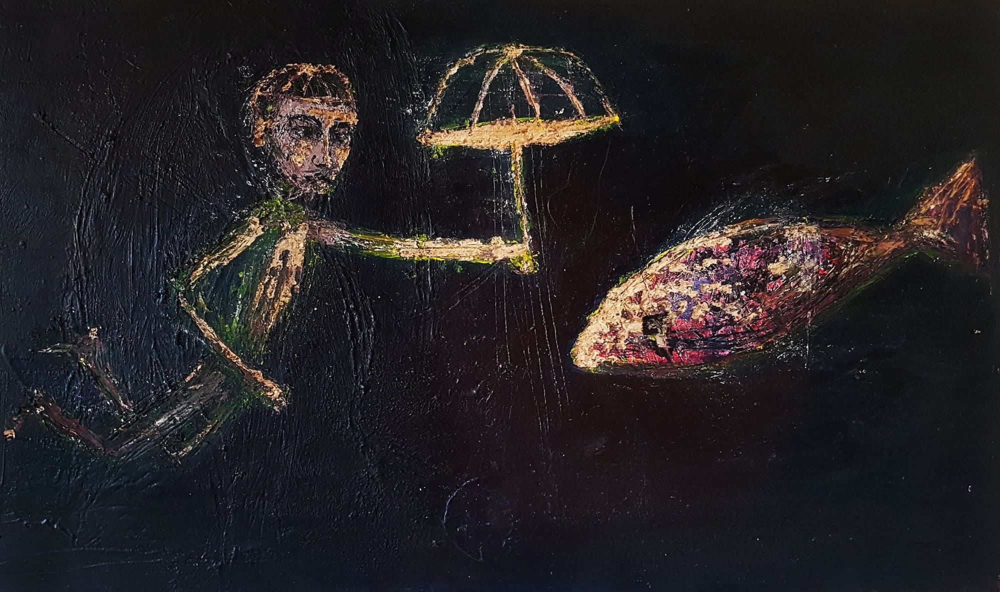

Warum dienst du nicht der Liebe? Ich hasse dich.
Menschen mit einer starken politischen Meinung sind anstrengend und mühsam. Menschen mit einer schwachen politischen Meinung sind schwach. Unpolitische Menschen sind dumm.
"Wir müssen endlich lernen "Nein" zu sagen." Egal ob links, rechts, reich, arm, jung, alt, Mann, Frau.. wir alle lieben diesen Satz.
Ein Klimaforscher prophezeit, dass die Welt in 100 Jahren untergehen wird, wenn wir weiter… Ich bin zu faul, um nachzulesen, was die Fakten bzgl. dem Klimawandel sind und kann sie entsprechend hier nicht nennen. Aber ich glaube an den Klimawandel, der durch die Umweltverschmutzung bedingt ist. Menschen die ihm gegenüber kritisch sind erscheinen mir mangelhaft gebildet* und von fragwürdigen Motiven geleitet. Aber etwas entgegnen kann ich diesen Kritikern nicht, denn ich bin ein fauler Mensch. Aber ich kann fragen.
Wer ist verantwortlich? Wer hat gesündigt? War es ein Mensch? War es eine Gruppe von Menschen? Die kapitalistisch eingestellten Menschen? Oder waren es alle Menschen? Die Menschheit? Wann begann die Sünde? Könnten wir von hier noch anders? Ist es dem Menschen geschehen, oder hätte er auch anders können? War es seine Entscheidung? Wenn es dem Menschen geschehen ist, was ist ihm hier geschehen? Kann es sein, dass der Klimawandel weder natürlich bedingt, noch menschgemacht ist? Sondern… ? Geschieht dem Menschen die Technologie oder machte der Mensch die Technologie? Entschied er sich für die Technologie? Entschied er sich für die Aufklärung? Für das Christenthum? Der momentane Zeitgeist liebt es, den Menschen für sein sündhaftes Verhalten zu beschimpfen. Aber überschätzt sich der Mensch hier nicht? Masst er sich hier nicht zu viel an, wenn er sich voll verantwortlich macht und denkt, er habe sich entschieden die Umwelt zu verschmutzen? Ist es nicht gar eben diese Anmaßung, die zur Umweltverschmutzung geführt hat? Ist es nicht eben diese Überbetonung der Willenskraft, dass er denkt, er könne alles entscheiden und über alles verfügen? Hat der Mensch sich dann entschieden, dass er über alles entscheiden könne? Es tut hier ein Widerspruch auf. Ich kann Fragen stellen, (ver)antworten kann ich nicht. Vielleicht bin ich zu faul, vielleicht kämpfe ich zu wenig. Vielleicht sind wir zu faul. Vielleicht sind wir es zu wenig.
*Hier sind Menschen ausgenommen, die mir sehr nahe stehen. Diese Menschen sind keineswegs ungebildet. Es sind gute, liebenswürdige Menschen.
